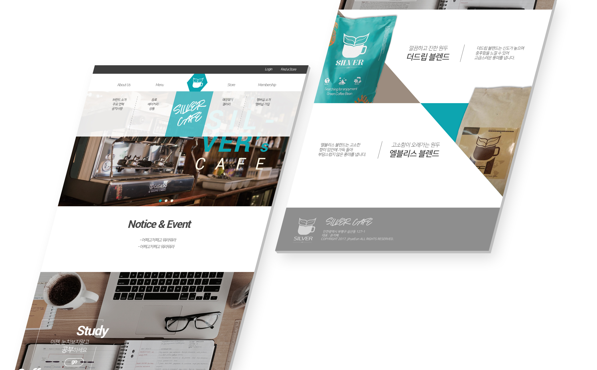
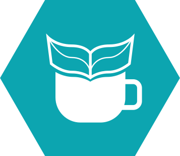
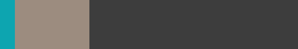

ABOUT
'Silver Cafe'는 커피전문점의 주 수요층인 20대를 타겟으로 잡았습니다.
또한 20대 중 늘어나는 카공족들에게도 열려있는
맛과 분위기 위주의 고급 커피전문점을 목표로 하였습니다.
LOGO
커피잔 위의 책은 부담없이 공부할 수 있는 북카페임을 나타내고,
책이 마치 새싹 모양인 것은 공부로 한 층 성장할 수 있음을
의미하고 있습니다.
또한, 안정적이고 신선한 파란색을 배경컬러로 지정함으로써,
차분하게 공부할 수 있는 세련된 카페임을 나타냅니다.
COLOR
대표 고급 커피 브랜드 '스타벅스'의 컬러 선정 방법인
'70 : 25 : 5'비율로 색상을 배치했습니다.
주제 색상인 파랑을 5%로, 나머지 색상은 고급 카페의
느낌을 살려 어두운 계열의 색상으로 지정했습니다.
STORY BOARD
 
